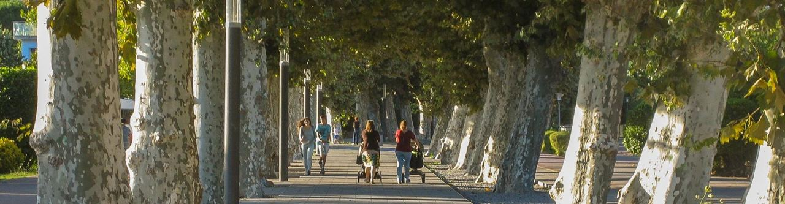

Ruta · Palautordera
Ruta lleugera a les portes del Parc Natural del Montseny , per conèixer l’ espai agrícola que formen les planes fluvials del Torrent dels Abaus, la Riera d’Avellaneda i el Torrent del Reguissol.…